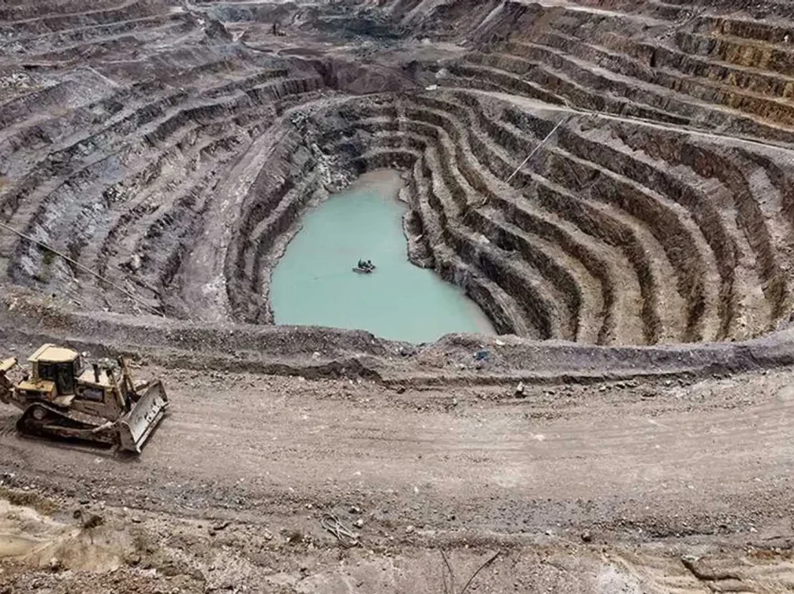
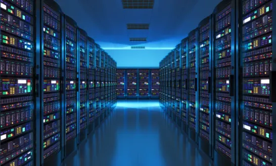

Introduction
Le rôle du numérique dans la vie quotidienne des gens s'est considérablement accru, ce qui entraîne une croissance de la demande en minerais rares comme le Coltan, le Cobalt... L'extraction de ces minerais pose de gros problèmes environnementaux en raison des manières dont ils sont extraits. De plus, l'extraction de ces minerais a souvent lieu dans des pays en développement, où les conditions de travail sont donc extrêmement difficiles. Nous allons voir dans quelles conditions les acteurs du numérique produisent. Pour cela, nous aborderons dans un premier temps les enjeux environnementaux, ensuite nous aborderons les conditions de travail.
Les minerais utilisés dans la production numérique
Les minerais tels que le coltan, le tantale, le cobalt, le cuivre et le lithium sont des éléments clés de la production numérique. Ils sont utilisés dans la fabrication de composants électroniques tels que les processeurs, les écrans et les batteries. Toutefois, l'extraction de ces minerais peut avoir des conséquences environnementales et sociales importantes.Si nous prenons par exemple, l'extraction de cobalt peut impliquer l'utilisation du travail des enfants et des conditions de travail dangereuses dans les mines en République Démocratique du Congo. La sécurité des mineurs n'est pas présente dans les mines, les équipements ne sont pas adéquats ce qui peut entraîner des blessures et parfois même des accidents mortels. Les conditions de production pour le numérique doivent donc inclure des pratiques responsables pour l'extraction de ces minerais, garantissant ainsi la durabilité et la responsabilité de la production numérique.
La consommation énergétique de l'industrie numérique
En plus de l'extraction de minerais, la production numérique a un impact environnemental important en raison de sa consommation énergétique. Les centres de données, qui stockent et traitent des quantités massives de données numériques, nécessitent des quantités énormes d'électricité pour fonctionner. Les entreprises doivent donc tenir compte de l'impact environnemental de leur consommation d'énergie et adopter des pratiques éco-responsables pour réduire leur empreinte carbone. Cela peut inclure l'utilisation de sources d'énergie renouvelables telles que l'énergie solaire et éolienne, ainsi que la mise en place de pratiques d'efficacité énergétique pour réduire la quantité d'énergie nécessaire pour faire fonctionner les centres de données.
Conclusion
La production numérique est un secteur en croissance qui repose sur l'utilisation de nombreux minerais pour la fabrication de composants électroniques. Cependant, l'extraction de ces minerais et la consommation énergétique de l'industrie ont des impacts environnementaux et sociaux considérables. Les conditions de production pour le numérique doivent inclure des pratiques responsables pour l'extraction de minerais, la réduction de la consommation d'énergie et la promotion de pratiques de travail équitables. Les entreprises doivent travailler
📚 Sources
- La machine est ton seigneur et ton maître
- L'industrie minière crée des phénomènes qu'elle ne sait pas maîtriser
- Ethical Consumer
- Fairphone
- Responsible Minerals Initiative
- ANACT
- Musée des Augustins
- Cairn.info - La question des minerais stratégiques, enjeu majeur de la géoéconomie mondiale
- Cairn.info - La révolution numérique améliore-t-elle l’impact social des entreprises ?
- BSI Economics
- HelloCarbo
- Verywell Digital
L'impact social de la production numérique
Outre les aspects environnementaux, la production numérique peut également avoir un impact social important. La production de composants électroniques implique souvent des conditions de travail difficiles et des salaires bas pour les travailleurs dans les pays en développement. De plus l'utilisation de produit toxique peut contaminer les eaux alentour, et donc rendre l'eau utilisée par les populations non potables. Les entreprises doivent donc garantir que les travailleurs sont traités équitablement et que leurs droits sont respectés tout au long de la chaîne d'approvisionnement. Des organisations telles que la Fair Labor Association et la Responsible Business Alliance travaillent avec des entreprises pour s'assurer que des pratiques de travail équitables sont adoptées.